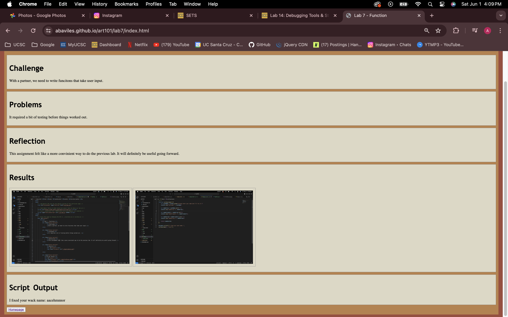

Challenge
Debug old labs.
Problems
Finding out what went wrong and spotting the various bugs.
Reflection
It honestly wasn't that bad, the bugs were easy to fix.
Results
Just mess with the input and buttons.
Debug
initially for the window prompt, I left out a period between window and prompt, so the funciton would not work. It was a small mistake.